19-2-2014
Frans van Mierisstraat, Amsterdam
Acts: Close-Up, Café Noir
Kunst: Kas Woudstra
Foto’s: Danny Griffioen
23-3-2014
Bosboom toussaintstraat, Amsterdam
Acts: Eleonor Coco, My Kingdom For a Horse
Foto’s: Isabel Mooij
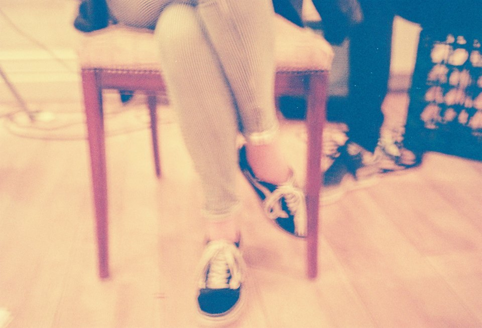
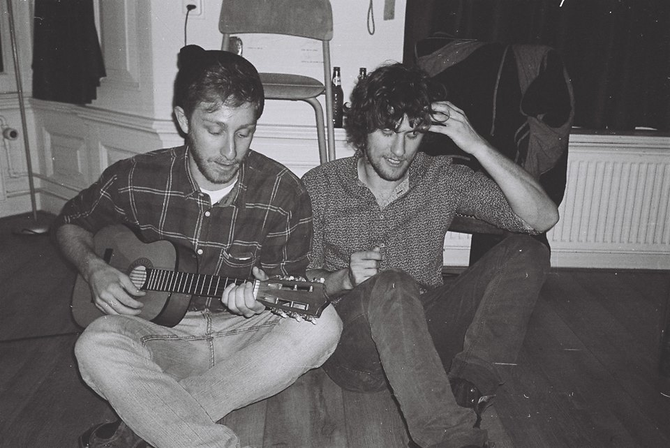
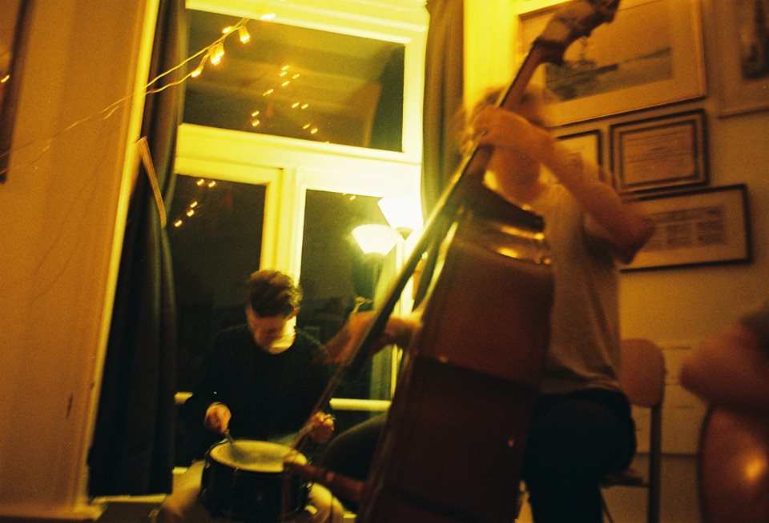
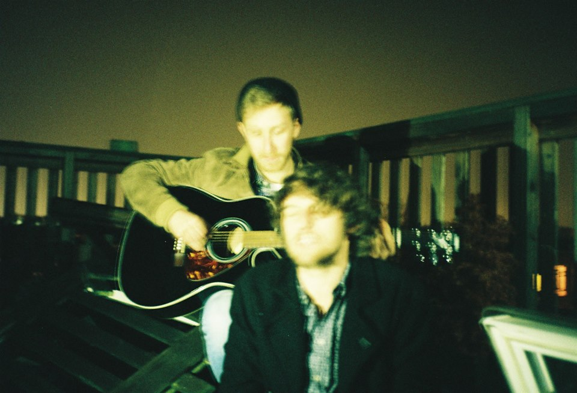
14-12-2014
The Annex, Toronto
Acts: Quinlan Lee, Tyler Santo, Lion’s Den
Foto’s: Emily Suzanne Harris Photography
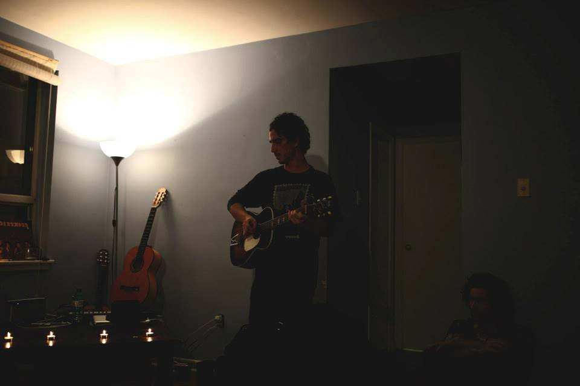
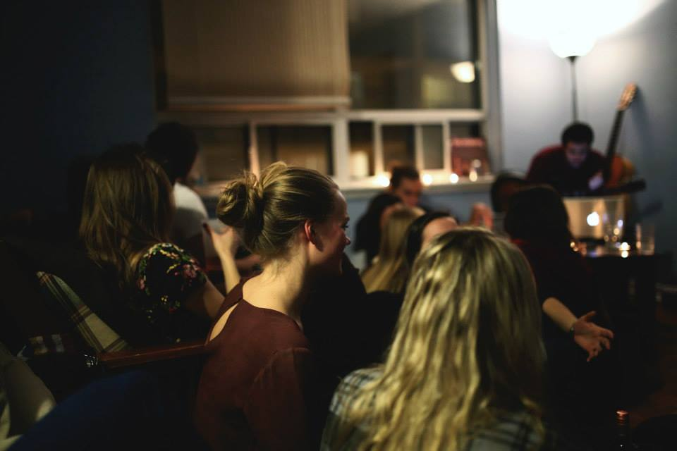
25-3-2015
Marie Heinekenplein, Amsterdam
Acts: Suzie Lora, Bugra Han, Lion’s Den
Foto’s: Danny Griffioen
10-5-2015
President Kennedylaan, Amsterdam
Acts: On Eva, Pitou, Astronaut
Foto’s: Danny Griffioen
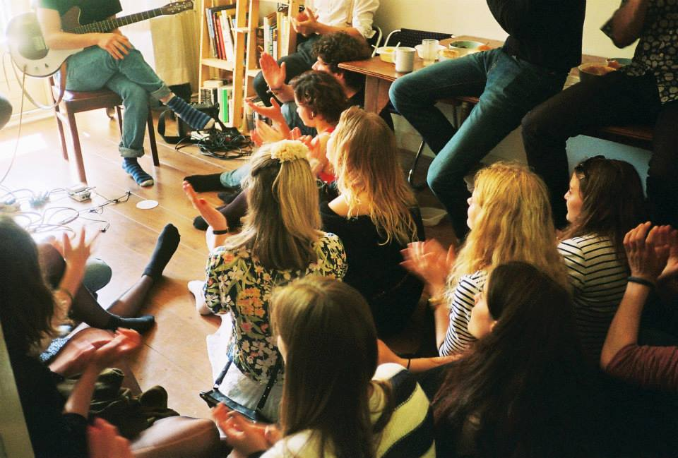
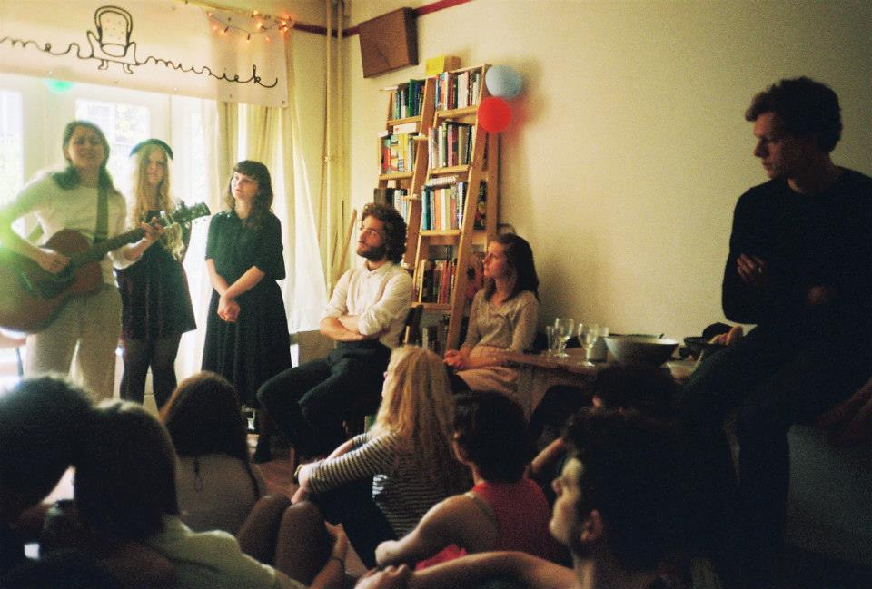
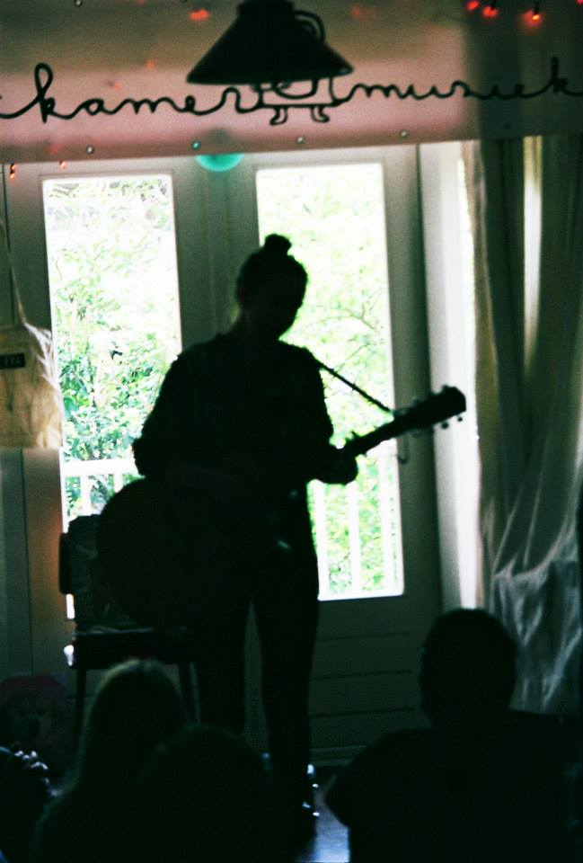
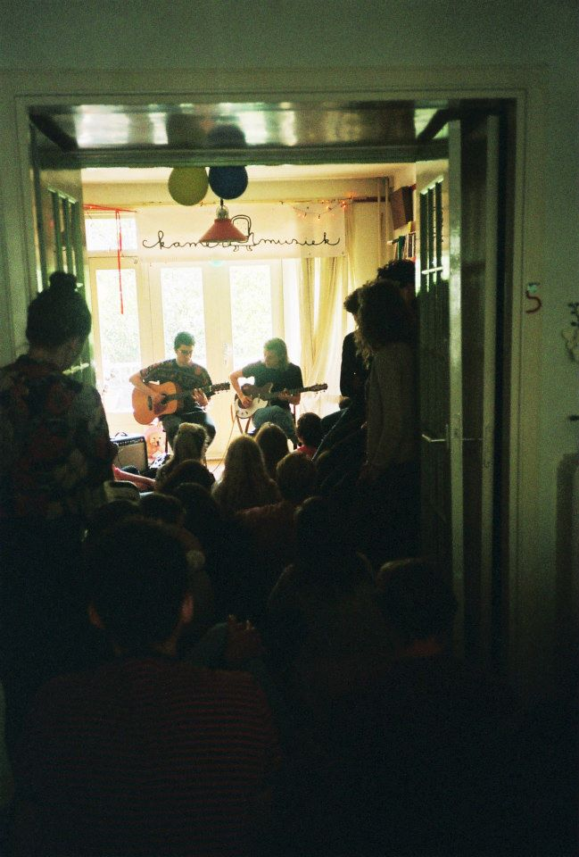
4-7-2015
Tolhuistuin, Amsterdam
Acts: Kees Buhrman, My Kingdom For a Horse, Rosemary and Garlic, LOLA, Moon Tapes, The Visual
Foto’s: Danny Griffioen
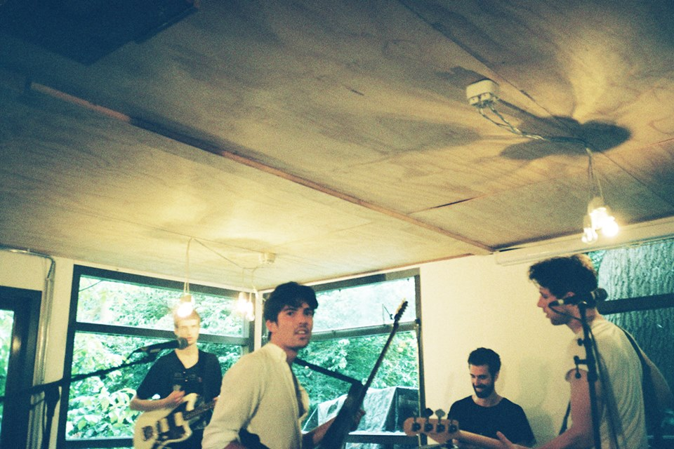
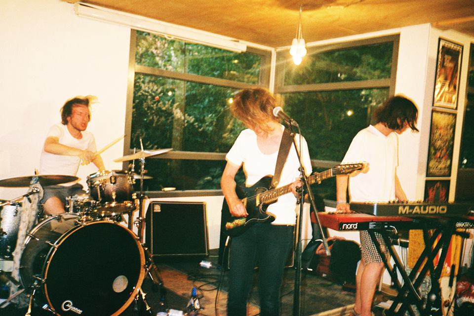
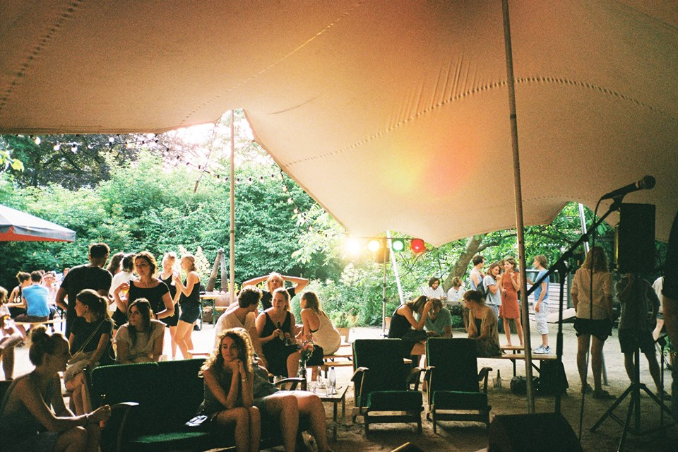
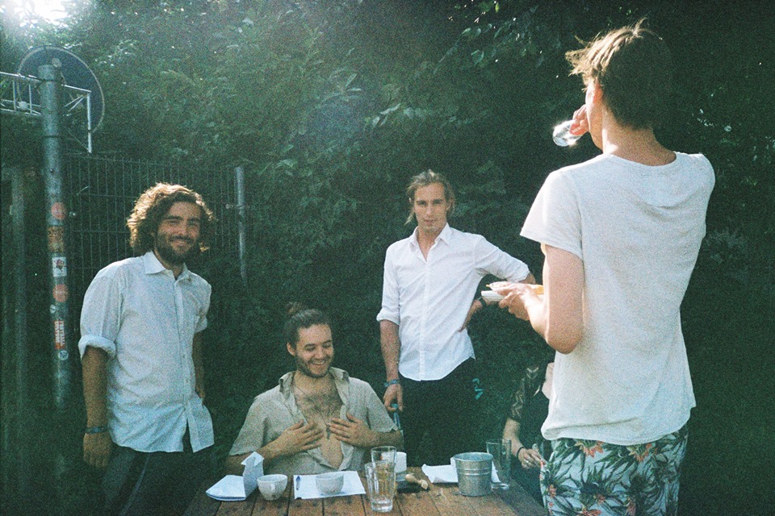
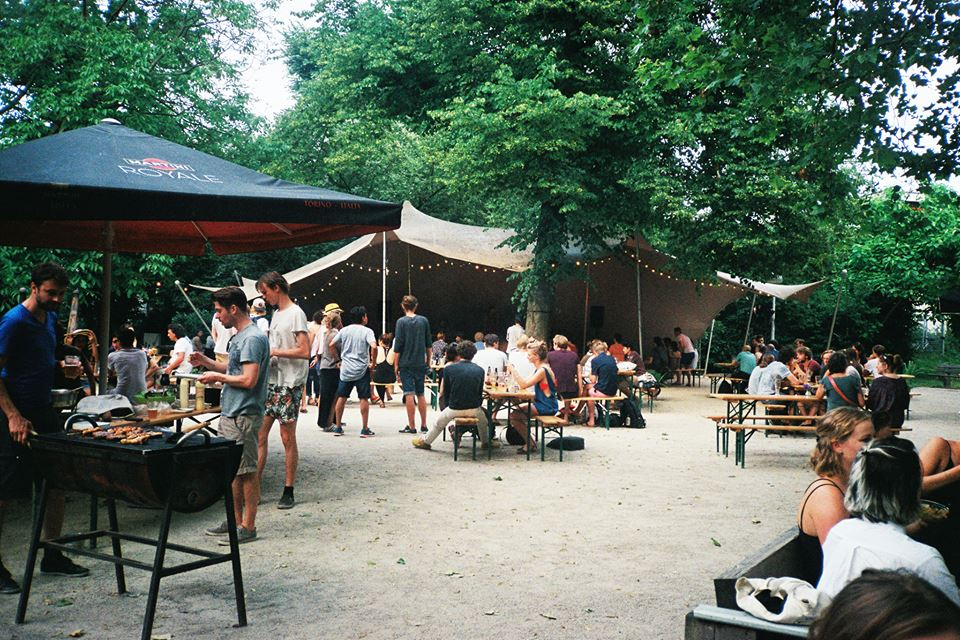
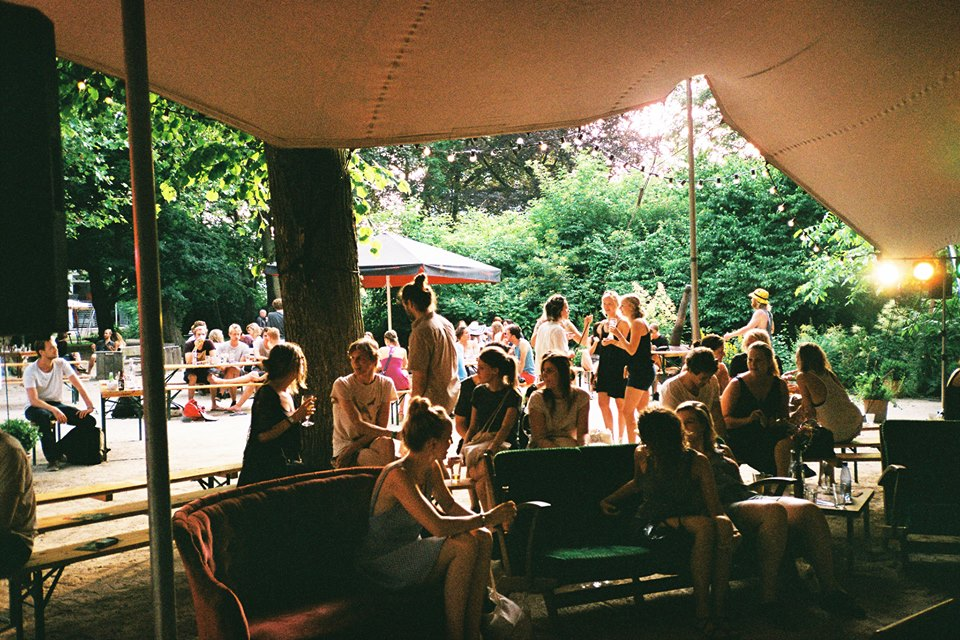